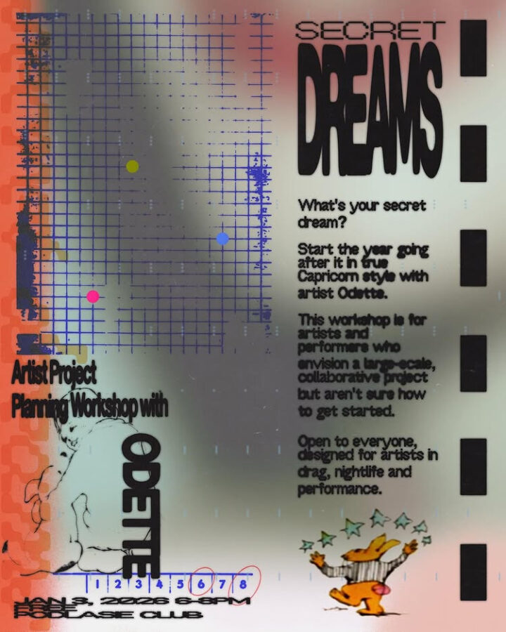

SECRET DREAMS
🌟 SECRET DREAMS 🌟
Project Planning for Artists with Odette
Podlasie Club
January 3, 2026
6-8 PM
FREE
What’s your secret dream? This workshop is for artists and performers who have an idea for a large-scale or collaborative project but aren’t sure how to get started. We’ll go over the project planning steps needed to bring your idea into reality including the assets needed to apply for project funding. Workshop will include guidance and templates for creating an artist statement and bio, curriculum vitae, project timeline and budget. We will use the requirements for Chicago’s DCASE IAP Grant, a grant open to Chicago artists, as a structure for participants interested in applying.
This workshop is open to everyone, but will be specifically geared towards artists in drag, nightlife and performance.